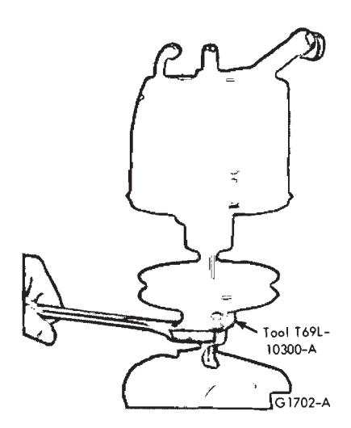
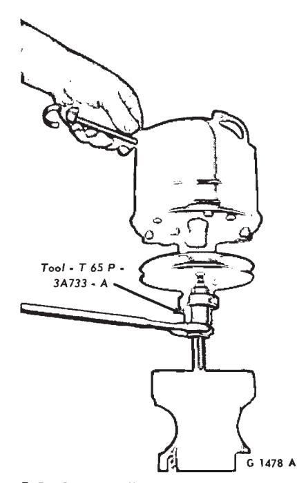
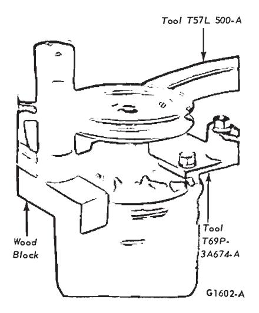
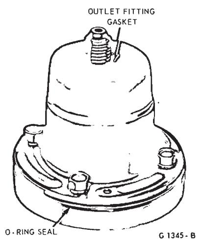
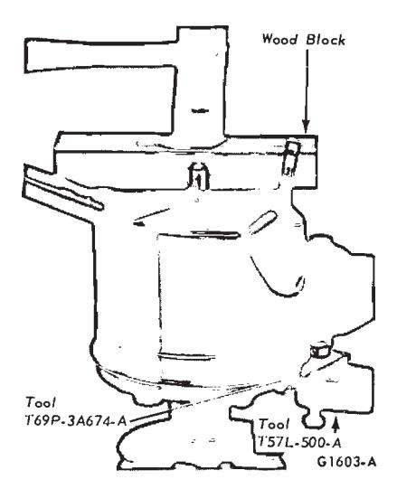

Ford-Thompson Power Steering Pump · 13-07-03a
Power Steering Pump
Eight Cylinder Without Air Conditioner and All Six Cylinder
- Remove the power steering fluid from the pump reservoir by disconnecting the fluid return hose at the reservoir, and allow the fluid to drain into a suitable container.
- Disconnect the pressure hose from the pump.
- Remove 3 bolts from the front of the pump and the one nut at the rear (rear nut on 8 Cylinder engines only) that attach the pump to the mounting bracket; disconnect the belt from the pulley and remove the pump from the vehicle.
- Position the pump to the mounting bracket and install the 3 bolts at the front of the pump and (rear nut on 8 Cylinder engines only) the 1 nut at the rear. Torque to specification.
- Place the belt on the pulley and adjust the belt tension (Section 2) with Tool T63L-8620-A and tighten the bolts and nut to specifications.
- Torque the pressure hose fitting hex nut to specification. Then, connect the pressure hose to the fitting and torque the hose nut to specification.
- Connect the hose to the pump. Then, tighten the clamp.
- Fill the power steering pump reservoir with transmission fluid C1AZ-19582-A and cycle the system to remove air from the steering gear system.
- Check for leaks and again check the fluid level. Add fluid as necessary.
Eight Cylinder with Air Conditioner
-
Remove the power steering fluid from the pump reservoir by disconnecting the fluid return hose from the reservoir and allow the fluid to drain in a suitable container.
-
Disconnect the pressure hose from the pump.
-
Remove 3 bolts from the front of the pump and the one nut at the rear that attach the pump to the mounting bracket and remove the drive belt from the pump pulley.
-
Loosen the upper pump bracket-to-engine attaching bolt and remove the bolt in the belt adjusting slot. Remove the pump.
-
Position the pump to the bracket and install the bracket-to-pump attaching bolts and nuts. Tighten to specifications.
-
Place the belt on the pump pulley. Adjust the belt tension as outlined in Section 2 and tighten the bolts and nut to specification.
-
Torque the pressure hose fitting hex nut to specification. Then, connect the pressure hose to the fitting and torque the hose nut to specification.
-
Connect the return hose to the power steering pump and tighten the clamp.

Fig. 4 — Removing Power Steering Pump Pulley
Fig. 5 — Installing Power Steering Pump Pulley -
Fill the pump with automatic transmission fluid C1AZ-19582-A. Bleed the air from the system (Part 13-01) and check for leaks and again check the fluid level. Add fluid as required.
Power Steering Pump Pulley
Removal
-
Drain as much of the fluid as possible from the pump through the filler pipe.

Fig. 6 — Removing Pump Reservoir
Fig. 7 — Gasket Locations -
Install a 3/8-16 inch capscrew in the end of the pump shaft to prevent damage to the shaft end by the tool screw.
-
Install the pulley remover, Tool T69L-10300-A, on pulley hub, and place the tool and pump in a vise as shown in Fig. 4.
-
Hold the pump and rotate the tool nut counterclockwise to remove the pulley (Fig. 4). The pulley must be removed without in and out pressure on the pump shaft to prevent damage to internal thrust areas.
Installation
-
Position the pulley to the pump shaft and install Tool T65P-3A733-A as shown in Fig. 5.
-
Hold the pump and rotate the tool nut clockwise to install the pulley on the shaft. The pulley face will be flush with end of pump shaft. Install the pulley without in and out pressure on the shaft to prevent damage to internal thrust areas.

Fig. 8 — Installing Reservoir on Pump — Typical -
Remove the tool.
Power Steering Pump Reservoir
Reservoir replacement must be done on a clean workbench. Cleanliness of work area and tools is extremely important when repairing any hydraulic unit. Thoroughly clean the exterior of the pump with a suitable cleaning solvent. Do not clean, wash or soak the shaft oil seal in solvent. Plug the inlet and outlet openings with plugs or masking tape before cleaning the pump exterior or removing the reservoir.
Removal
- Assemble the adapter plate (Tool T69P-3A674-A) to the bench mounted fixture tool (T57L-500-A). Position the pump and pulley on the adapter plate, pulley facing down.
- Remove the outlet fitting hex nut and the service identification tag.
- Invert the pump so the pulley is facing up and remove the reservoir by tapping around the flange with a wood block (Fig. 6).
- Remove the reservoir O-ring seal and the outlet fitting gasket from the pump.
Installation
- Install a new gasket on the outlet fitting and a new reservoir O-ring seal on the pump housing plate (Fig. 7). The old gasket and seal should never be re-used.
- Apply vaseline to the reservoir O-ring seal and to the inside edge of the new reservoir flange. Do not twist the O-ring seal.
- Position the reservoir over the pump and align the notch in the reservoir flange with the notch in the outer diameter of the plate and bush- ing assembly.
- Install the reservoir on the pump and O-ring seal with a plastic or rubber hammer and a block of wood as shown in Fig. 8. Tap at-the rear of the reservoir and on the outer edges only.
- Inspect the assembly to be sure the reservoir is evenly seated on the pump housing plate.
- Position the service identification tag on the outlet fitting and install the outlet fitting hex nut. Torque the nut to specification. Do not exceed specification.